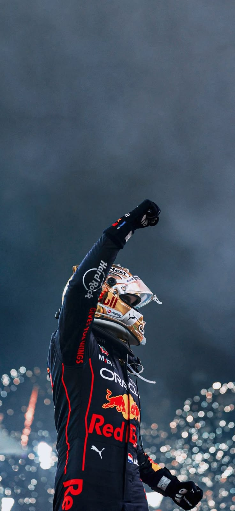

Why The World Admires Max Verstappen
Fearless Racer
Max is known for his aggressive overtakes and never-back-down attitude. When he sees a gap, he goes for it — no hesitation.

Master of Control
Whether in dry or wet conditions, Max controls the car like no one else. His rain performances are legendary.

Champion Mentality
Once he takes the lead, he never lets go. His focus and confidence define greatness.
Relentless Winner
Victory is not a moment for Max — it is a habit. He races to dominate.